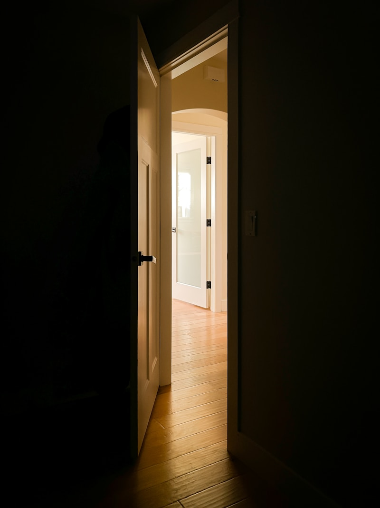

Every rung, together.
Common Ladder builds free, research-based tools that help people experiencing homelessness access services, plan a path forward, and attain lasting stability — with the insider knowledge that connected people get from lawyers and advisors, but that most people never see.
Research privilege shouldn't be a privilege.
When a middle-class family faces a housing crisis, they call a lawyer, ask a financially savvy friend, or hire a consultant. They get the insider knowledge: which programs to apply to in which order, which rights they have that landlords don't tell them about, which benefits they're entitled to but have to ask for explicitly.
People experiencing poverty face the same decisions with none of that support. They navigate a system that is genuinely complicated — one with catch-22s, hidden rules, and opportunities that only appear if you know to look for them.
Common Ladder closes that gap. We build free, research-based tools that surface the insider knowledge and give everyone the kind of planning support that used to require a professional. Our tools help people access the right services, sequence their steps correctly, understand their rights, and identify benefits they're legally entitled to but rarely told about.
We don't run shelters or provide direct services. We build the tools, directories, and information infrastructure that make the whole system navigable — for the person who needs help tonight, the case manager serving fifty clients, and everyone in between.
How we approach the work
Tools that equalize access
Our research-based planning tools surface the insider knowledge that wealthy, connected people take for granted — giving everyone the kind of support that usually requires a lawyer or financial advisor.
Mobile first, always
The majority of people accessing help will be on a phone. Every tool we build starts at 375px and works without reliable internet or a charged battery.

No barriers to access
No login required. No forms to fill out before you can search. No account needed to find a shelter. Information is a public good.
Research-backed, community-verified
Every tool we build is grounded in evidence about what actually works — then verified with local nonprofits, Continuums of Care, and people with lived experience.
Built to plan, not just point
Most resource directories tell you what exists. Common Ladder's tools help you figure out what to do — in what order, with what knowledge, and with what rights. Every tool is free, private, and requires no account.
My Ladder
Our flagship planning tool. Answer 7 questions and get a personalized step-by-step roadmap — from crisis shelter through income, banking, employment, and long-term stability. At every step, we surface the insider knowledge most people never get access to.
Build your ladder →Stay-Housed Navigator
For Maricopa County residents at risk of losing housing — maps the fastest path to eviction prevention, rental assistance, and diversion support before a crisis becomes a shelter stay.
Open navigator →Arizona Shelter Finder
Searchable directory of 75+ Arizona shelter and housing programs — filtered by location, population served, eligibility, and availability. No account. No forms.
Find shelters →City Navigators
Step-by-step local guides for navigating the homeless services system in 75+ cities across the US — from Phoenix and Tucson to New York, Los Angeles, and beyond.
Browse all cities →Partner with Common Ladder
Common Ladder is free for nonprofits and government agencies. We're actively building our directory and would love to include your organization.
Nonprofits & shelters
List your services in our directory for free. We'll keep your information accurate and make it easy for case managers and individuals to find you.
Government & CoCs
We support HUD reporting and Continuum of Care coordination. Contact us to discuss data partnerships and regional integration.
Contact us
Questions about the platform, partnership inquiries, or resource updates — we want to hear from you.
hello@commonladder.org